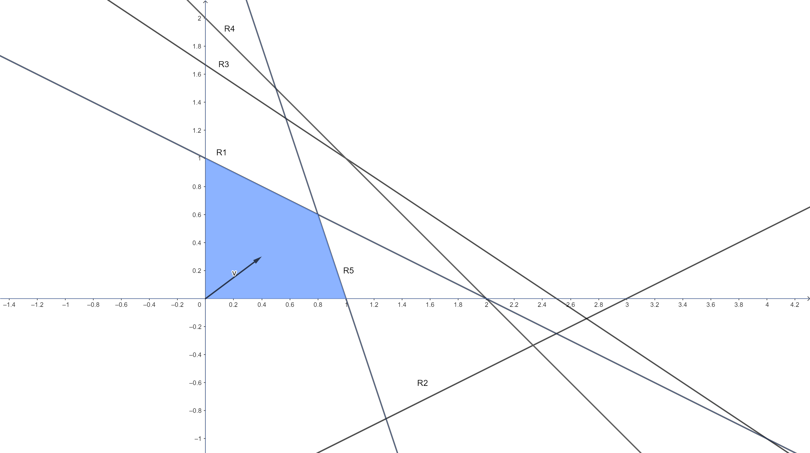

Chapter 2 Dualidade
2.1 Tabela de conversão primal-dual
Podemos usar a seguinte tabela para conversão de problemas primal-dual.
Considerando o modelo primal escrito na seguinte forma:

Em que:
\[\begin{cases} \text{1: max ou min} \\ \text{2: $\geq$, $=$ ou $\leq$} \\ \text{3: $\geq 0$,$\leq 0$ ou irrestrito} \end{cases}\]Mesmo sem usar a tabela já sabemos como ficam alguns termos do dual (sempre):
Para usar a tabela, usamos os valores do primal (1,2 e 3) que são conhecidos, para preencher os valores do dual desconhecidos (4,5,6). Usamos os seguintes passos:
- Determine qual é a coluna do primal considerando se o problema é de min (primeira coluna) ou de max (segunda coluna).
- Para cada valor do primal na coluna selecionada, encontre os equivalentes duais na mesma linha da outra coluna.
EXEMPLO 1: Escreva o dual do seguinte PL:
\[\begin{alignat*}{4} & \text{min z = } & 6x_1 & + 8x_2 \\ & \text{Sujeito à} & 3x_1 & + x_2 &\geq 4\\ & & 5x_1 & + 2x_2 & \geq 7\\ & & x_1 \geq 0 & \quad x_2 \geq 0& \end{alignat*}\]Temos que:
\[\begin{alignat*}{4} & \text{max v = } & 4\pi_1 & + 7\pi_2 \\ & \text{Sujeito à} & 3\pi_1 & + 5\pi_2 &\leq 6\\ & & \pi_1 & + 2\pi_2 & \leq 8\\ & & \pi_1 \geq 0 & \quad \pi_2 \geq 0& \end{alignat*}\]EXEMPLO 2: Escreva o dual do seguinte PL (sapateiro):
\[\begin{alignat*}{4} & \text{max z = } & 5x_1 & + 2x_2 \\ & \text{Sujeito à} & 10x_1 & + 12x_2 &\leq 60\\ & & 2x_1 & + x_2 & \leq 6\\ & & x_1 \geq 0 & \quad x_2 \geq 0& \end{alignat*}\]Temos que:
\[\begin{alignat*}{4} & \text{min v = } & 60\pi_1 & + 6\pi_2 \\ & \text{Sujeito à} & 10\pi_1 & + 2\pi_2 &\geq 5\\ & & 12\pi_1 & + \pi_2 & \geq 2\\ & & \pi_1 \geq 0 & \quad \pi_2 \geq 0& \end{alignat*}\]Você consegue pensar em alguma interpretação para o dual do problema do sapateiro? Crie uma situação que justifique o modelo dual (como o da nutricionista/vendedos de píluas).
reposta:
Podemos pensar na situação que alguém deseja contratar o sapateiro por uma hora. Como o sapateiro já tem um estoque de couro, esse estoque deve ser comprado também, ou seja, a pessoa que contrata o sapateiro precisa definir quanto pagar para ele por unidade de tempo, bem como por unidade de couro.
EXEMPLO 3: Escreva o dual do seguinte PL:
\[\begin{alignat*}{4} & \text{max z = } & 8x_1 & + 3x_2 & -2x_3 \\ & \text{Sujeito à} & x_1 & - 6x_2 & +x_3 &\geq 2\\ & & 5x_1 & + 7x_2 & & = 4\\ & & x_1 \geq 0 & \quad x_2 \geq 0 &\quad x_3 \geq 0 \end{alignat*}\]Temos que:
\[\begin{alignat*}{4} & \text{min v = } & 2\pi_1 & + 4\pi_2 \\ & \text{Sujeito à} & \pi_1 & + 5 \pi_2 &\geq 8\\ & & -6\pi_1 & + 7\pi_2 & \geq 3\\ & & \pi_1 & &\geq -2\\ & & \pi_1 \leq 0 & \quad \pi_2 \quad \text{irr.}& \end{alignat*}\]EXEMPLO 4: Escreva o dual do seguinte PL:
\[\begin{alignat*}{4} & \text{min z = } & 5x_1 & - 6x_2 & + 7x_3 & + x_4 \\ & \text{Sujeito à} & x_1 & + 2x_2 & -x_3 & - x_4 & = -7 \\ & & 6x_1 & - 3x_2 & + x_3 & - 7x_4 & \geq 14\\ & & -2.8x_1 & - 17x_2 & + 4x_3 & + 2x_4 & \leq -3\\ & & x_1 \geq 0 & \quad x_2 \geq 0 & x_3& \quad x_4 & \text{irr.} \end{alignat*}\]Temos que:
\[\begin{alignat*}{4} & \text{max v = } & -7\pi_1 & + 14\pi_2 & -3\pi_3 \\ & \text{Sujeito à} & \pi_1 & + 6 \pi_2 & -2.8\pi_3 &\leq 5\\ & & 2\pi_1 & -3 \pi_2 & -17\pi_3 &\leq -6\\ & & -\pi_1 & + \pi_2 & +4\pi_3 & = 7\\ & & -\pi_1 & - 7\pi_2 & +2\pi_3 & = 1\\ & & \pi_1 \quad \text{irr.} &\quad \pi_2 \geq 0 & \pi_3 \leq 0 \end{alignat*}\]2.2 Teoremas da dualidade
Existem diversas relações entre os modelos primal-dual. Essas relações são expressas por meio de teoremas, 3 dos quais muito importantes: teorema fraco (partes 1 e 2) e forte da dualidade, relacionando as funções objetivo, e o teorema das folgas complementares, relacionando os valores das soluções.
2.2.1 Teorema fraco da dualidade parte 1
TEOREMA: Seja \(x_0\) e \(\pi_0\) soluções factíveis quaisquer para o para primal(min)-dual(max), e \(Z_0\) e \(V_0\) seus valores objetivo, então temos que:
\(V_0 \leq Z_0\)
PROVA
Seja o par primal-dual escritos na seguinte forma:
Primal(P):
\(min \quad z = c^Tx\)
s.a: \(\quad \quad Ax \geq b\)
\(\quad \quad x \geq 0\)
Dual(D):
\(max \quad v = b^T\pi\)
s.a: \(\quad \quad A^T\pi \leq c\)
\(\quad \quad \pi \geq 0\)
Como \(x_0\) e \(\pi_0\) são factíveis, temos que:
\(\quad \quad Ax_0 \geq b\)
\(\quad \quad A^T\pi_0 \leq c\)
Também o são.
Multiplicando \(\quad \quad Ax_0 \geq b\) de P por \(\pi_0^T\) temos:
\(\pi_0^TAx_0 \geq \pi_0^Tb\) (I)
Agora, usamos a propriedade da tranposta da multiplicação de duas matrizes em \(\quad \quad A^T\pi_0 \leq c\) de D, que diz que:
\((AB)^T = B^TA^T\)
Portanto, temos que:
\(\pi_0^TA \leq c^T\)
Multiplicando ambos os lados por \(x_0\):
\(\pi_0^TAx_0 \leq c^Tx_0\) (II)
Temos um termo em comum em (I) e (II), juntando os termos em uma expressão:
\(\pi_0^Tb \leq \pi_0^TAx_0 \leq c^Tx_0\)
Os termos dos extremos são justamente os valores das funções objetivo primal-dual, portanto podemos escrever:
\(V_0 \leq \pi_0^TAx_0 \leq Z_0\)
Ainda:
\(V_0 \leq Z_0\), como queriamos demonstrar.
2.2.2 Teorema fraco da dualidade parte 2
TEOREMA: Seja \(x_0^*\) e \(\pi_0^*\) soluções ótimas para os respectivos problemas primal e dual, e \(Z^*\) e \(V^*\) suas funções objetivo, então:
\(V^* = Z^*\)
PROVA
2.2.3 Teorema das folgas complementares (TFC)
TEOREMA: Sabe-se que para cada restrição primal existe uma variável equivalente dual. Seja \(x\) as variáveis do modelo primal, \(x_f\) as folgas/excessos relativos às restrições, \(\pi\) as variáveis do modelo dual e \(\pi_f\) as suas folgas/excessos. Temos que, na otimalidade:
\(x_f^T\pi = 0\)
\(\pi_f^Tx = 0\)
PROVA
Ou seja, na otimalidade, o produto das variáveis de folga de um modelo pelas suas respectivas variáveis no outro modelo deve ser zero. O produto de 2 elementos só pode ser zero se pelo menos um dos dois for zero. Com isso podemos inferir valores das variáveis de um modelo com base nas respostas do outro. Por exemplo, sabendo que uma variável de um modelo tem valor \(>0\), sabemos que a sua equivalente do outro modelo deve obrigatoriamente ser 0. A melhor forma de enxergar o TFC é montando as relações entre as variáveis.
EXEMPLO 1: Contrua todas as relações de folgas complementares para o modelo abaixo:
\[\begin{alignat*}{4} & \text{min z = } & x_1 & + 2x_2 \\ & \text{Sujeito à} & -2x_1 & + x_2 & \geq 3 \\ & & 3x_1 & + 4x_2 & \geq 5 \\ & & x_1 & - x_2 & \geq 2 \\ & & x_1 \geq 0 & \quad x_2 \geq 0 \end{alignat*}\]Sabemos que a cada restrição primal está associada uma variável dual, e esta está relacionada com a variável de folga/excesso da restrição. Escrevendo o modelo com as variáveis de folga e marcando ao lado de cada restrição a sua variável equivalente dual:
\[\begin{alignat*}{4} & \text{min z = } & x_1 & + 2x_2 \\ & \text{Sujeito à} & -2x_1 & + x_2 & -x_3 & & & = 3 & \quad \color{red}{(\pi_1)} \\ & & 3x_1 & + 4x_2 & & -x_4 & & = 5 & \quad \color{red}{(\pi_2)} \\ & & x_1 & - x_2 & & & -x_5 & = 2 & \quad \color{red}{(\pi_3)} \\ & & x_1 \geq 0 & \quad x_2 \geq 0 \end{alignat*}\]Temos então as seguintes relações:
\(x_3\pi_1 = 0\)
\(x_4\pi_2 = 0\)
\(x_5\pi_3 = 0\)
Para ter as relações completas precisamos também do modelo dual:
\[\begin{alignat*}{4} & \text{max v = } & 3\pi_1 & + 5\pi_2 & + 2\pi_3 \\ & \text{Sujeito à} & -2\pi_1 & + 3\pi_2 & + \pi_3 & \leq 1 \\ & & \pi_1 & + 4\pi_2 & -\pi_3 & \leq 2 \\ & & \pi_1 \geq 0 & \pi_2 \geq 0 & \pi_3 \geq 0 \end{alignat*}\]Escrevendo na forma padrão com as variáveis de folga/excessos e as equivalentes do modelo primal:
\[\begin{alignat*}{4} & \text{max v = } & 3\pi_1 & + 5\pi_2 & + 2\pi_3 \\ & \text{Sujeito à} & -2\pi_1 & + 3\pi_2 & + \pi_3 & + \pi_4& & = 1 &\quad \color{red}{(x_1)} \\ & & \pi_1 & + 4\pi_2 & -\pi_3 & & + \pi_5 & = 2 &\quad \color{red}{(x_2)} \\ & & \pi_1 \geq 0 & \pi_2 \geq 0 & \pi_3 \geq 0 \end{alignat*}\]As relações para o dual ficam então:
\(\pi_4x_1 = 0\)
\(\pi_5x_2 = 0\)
Portanto temos as relações de folgas complementares completas:
\(x_3\pi_1 = 0\)
\(x_4\pi_2 = 0\)
\(x_5\pi_3 = 0\)
\(\pi_4x_1 = 0\)
\(\pi_5x_2 = 0\)
EXERCICIO 1: Sabe-se que \(x^T = (x_1,x_2,x_3) = (0,1.5,4.5)\) é a solução ótima do modelo:
\[\begin{alignat*}{4} & \text{max z = } & 3x_1 & & + 2x_3 \\ & \text{Sujeito à} & x_1 & + x_2 & + x_3 & \leq 6 \\ & & 2x_1 & -x_2 & + x_3 & \leq 3 \\ & & 3x_1 & + x_2 & - x_3 & \leq 3 \\ & & x_1 \geq 0 & x_2 \geq 0 & x_3 \geq 0 \end{alignat*}\]A: Qual o valor da função objetivo dual?
B: Qual a solução dual?
SOLUÇÃO
A: Qual o valor da função objetivo dual?
Pelo teorema fraco da dualidade parte 2 sabemos que na otimalidade, \(Z^* = V^*\), portanto o valor objetivo dual é o mesmo do primal, basta calcularmos:
\(Z^* = 3\cdot0 + 0 \cdot 1.5 + 2\cdot 4.5 = 9\), portanto o valor dual ótimo \(V^* = Z^* = 9\).
B: Qual a solução dual?
Sabemos que o TFC relaciona as soluções ótimas do primal e do dual. Construindo o modelo na forma padrão, com as variáveis de folga/excessos e as duais relativas:
\[\begin{alignat*}{4} & \text{max z = } & 3x_1 & & + 2x_3 \\ & \text{Sujeito à} & x_1 & + x_2 & + x_3 & + x_4 &&& = 6 & \quad \color{red}{(\pi_1)} \\ & & 2x_1 & -x_2 & + x_3 & & + x_5&& = 3 & \quad \color{red}{(\pi_2)} \\ & & 3x_1 & + x_2 & - x_3 & & & + x_6& = 3 & \quad \color{red}{(\pi_3)} \\ & & x_1 \geq 0 & x_2 \geq 0 & x_3 \geq 0 \end{alignat*}\]O que gera as relações:
\(x_4\pi_1 = 0\)
\(x_5\pi_2 = 0\)
\(x_6\pi_3 = 0\)
Criando o dual do modelo original:
\[\begin{alignat*}{4} & \text{min v = } & 6\pi_1 & + 3\pi_2 & + 3\pi_3 \\ & \text{Sujeito à} & \pi_1 & + 2\pi_2 & + 3\pi_3 & \geq 3 \\ & & \pi_1 & - \pi_2 & +\pi_3 & \geq 0 \\ & & \pi_1 & + \pi_2 & -\pi_3 & \geq 2 \\ & & \pi_1 \geq 0 & \pi_2 \geq 0 & \pi_3 \geq 0 \end{alignat*}\]Com as variáveis de excesso e folgas, e as equivalentes do primal:
\[\begin{alignat*}{4} & \text{min v = } & 6\pi_1 & + 3\pi_2 & + 3\pi_3 \\ & \text{Sujeito à} & \pi_1 & + 2\pi_2 & +3\pi_3 & - \pi_4&&& = 3 & \quad \color{red}{(x_1)} \\ & & \pi_1 & - \pi_2 & +\pi_3 & &-\pi_5&& = 0 & \quad \color{red}{(x_2)} \\ & & \pi_1 & + \pi_2 & -\pi_3 & &&-\pi_6& = 2 & \quad \color{red}{(x_3)} \\ & & \pi_1 \geq 0 & \pi_2 \geq 0 & \pi_3 \geq 0 \end{alignat*}\]Todas as relações ficam então:
\(\pi_4x_1 = 0\)
\(\pi_5x_2 = 0\)
\(\pi_6x_3 = 0\)
\(x_4\pi_1 = 0\)
\(x_5\pi_2 = 0\)
\(x_6\pi_3 = 0\)
Sabemos os valores de \(x^T = (x_1,x_2,x_3) = (0,1.5,4.5)\). Se substituirmos no modelo conseguimos encontrar os valores das variáveis de folga:
\[\begin{alignat*}{4} & \text{Sujeito à} & 0\cdot0 & + 1.5 & + 4.5 & + x_4 &&& = 6 \\ & & 2\cdot0 & - 1.5 & + 4.5 & & + x_5&& = 3 \\ & & 3\cdot0 & + 1.5 & - 4.5 & & & + x_6& = 3 \\ & & x_1 \geq 0 & x_2 \geq 0 & x_3 \geq 0 \end{alignat*}\]Temos que \(x^T = (x_4,x_5,x_6) = (0,0,6)\). Assim, sabemos que as variáveis \(x_2,x_3\) e \(x_6\) possuem valor, de forma que, para o TFC se manter, as suas equivalentes devem ser 0:
\(\pi_5x_2 = 0 \rightarrow \pi_5 = 0\)
\(\pi_6x_3 = 0 \rightarrow \pi_6 = 0\)
\(x_6\pi_3 = 0 \rightarrow \pi_3 = 0\)
Agora reescrevemos o sistema de equações do dual removendo as variáveis nulas:
\[\begin{alignat*}{4} & \text{Sujeito à} & \pi_1 & + 2\pi_2 & & - \pi_4&&& = 3 \\ & & \pi_1 & - \pi_2 & & &&& = 0 \\ & & \pi_1 & + \pi_2 & & &&& = 2 \\ & & \pi_1 \geq 0 & \pi_2 \geq 0 & \pi_3 \geq 0 \end{alignat*}\]O que gera um sistema 3x3. Podemos resolvê-lo facilmente por simples inspeção:
\(\pi_1 = 1\), \(\pi_2 = 1\) e \(\pi_4 = 0\). Assim, temos que a solução dual fica: \(\pi^T = (\pi_1,\pi_2, \pi_3) = (1,1,0)\)
EXERCICIO 2: Encontre a solução do modelo de PL:
\[\begin{alignat*}{4} & \text{min z = } & 2x_1 & +3x_2 & + 5x_3 & + 2x_4 & + 3x_5 \\ & \text{Sujeito à} & x_1 & + x_2 & + 2x_3 & + x_4 & + 3x_5 & \geq 4 &\quad \color{red}{(\pi_1)} \\ & & 2x_1 & -2x_2 & + 3x_3 & +x_4 & + x_5 & \geq 3 &\quad \color{red}{(\pi_2)} \\ & & x_1 \geq 0 \quad & x_2 \geq 0\quad & x_3 \geq 0\quad & x_4 \geq 0 \quad& x_5 \geq 0 \end{alignat*}\]Como existem duas restrições, sabemos que o modelo dual terá somente 2 variáveis. Podemos então resolver o dual gráficamente e usar sua solução pelo TFC para encontrar a solução do primal. O dual é mostrado abaixo, com suas variáveis primais correspondentes e os pontos para geração do gráfico:
\[\begin{alignat*}{4} & \text{max v = } & 4\pi_1 & + 3\pi_2 \\ & \text{Sujeito à} & \pi_1 & + 2\pi_2 & \leq 2 & \quad \color{red}{(x_1)} \quad (0,1) (2,0) \\ & & \pi_1 & - 2\pi_2 & \leq 3 & \quad \color{red}{(x_2)} \quad (0,-1.5)(3,0) \\ & & 2\pi_1 & + 3\pi_2 & \leq 5 & \quad \color{red}{(x_3)} \quad (0,1.66)(2.5,0)\\ & & \pi_1 & + \pi_2 & \leq 2 & \quad \color{red}{(x_4)} \quad (0,2)(2,0)\\ & & 3\pi_1 & + \pi_2 & \leq 3 & \quad \color{red}{(x_5)} \quad (0,3)(1,0)\\ & & \pi_i \geq 0 & \quad\pi_2 \geq 0 \end{alignat*}\]Para usar o TFC não precisamos necessáriamente saber o valor das variáveis, simplesmente determinar se são \(>0\) (o que permite inferir que a variável correspondente deve ser 0). Assim, podemos pela simples análise do gráfico da região factível com o vetor gradiente verificar quais variáveis tem valor e quais não tem.
Para isso faremos a inferência dos valores das variáveis de folga, levando em consideração o local do ponto ótimo e das restrições:

Vemos pela região factível e pelo vetor gradiente que o ponto ótimo está na intersecção das restrições R1 e R5. Com isso já inferimos que \(\pi_1 > 0\) e \(\pi_2 > 0\). Ainda, como o ponto ótimo não chega a nenhuma das outras restrições, as respectivas variáveis de folga obrigatoriamente devem ser \(>0\). Assim, temos que as folgas das restrições R2(\(\pi_4\)), R3(\(\pi_5\)) e R4(\(\pi_6\)) são \(>0\). As relações do TFC são dadas por:
\(x_6\pi_1 = 0\)
\(x_7\pi_2 = 0\)
\(\pi_3x_1 = 0\)
\(\pi_4x_2 = 0\)
\(\pi_5x_3 = 0\)
\(\pi_6x_4 = 0\)
\(\pi_7x_5 = 0\)
Como \(\pi_1 > 0, \pi_2 > 0, \pi_4 > 0, \pi_5 > 0, \pi_6 > 0\), temos que:
\(x_6\pi_1 = 0 \rightarrow x_6 = 0\)
\(x_7\pi_2 = 0 \rightarrow x_7 = 0\)
\(\pi_4x_2 = 0 \rightarrow x_2 = 0\)
\(\pi_5x_3 = 0 \rightarrow x_3 = 0\)
\(\pi_6x_4 = 0 \rightarrow x_4 = 0\)
Agora podemos substituir esses valores no modelo primal (na forma padrão), ficamos com o sistema:
\[\begin{alignat*}{4} & & x_1 & & & & + 3x_5 & = 4 \\ & & 2x_1 & & & & + x_5 & = 3 \\ \end{alignat*}\]Resolvendo por pivoteamento, temos que \(x_1 = 1\) e \(x_5 = 1\). Assim, a solução do modelo primal é \(x^T = (x_1,x_2,x_3,x_4,x_5) = (1,0,0,0,1)\), com custo \(z = 5\).